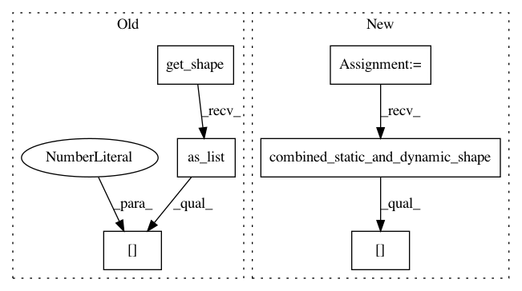

4f14cb629462c9e685ea92a961a80a8c5dcda83a,object_detection/utils/test_utils.py,MockBoxPredictor,_predict,#MockBoxPredictor#Any#Any#,47
Before Change
def _predict(self, image_features, num_predictions_per_location):
batch_size = image_features.get_shape().as_list()[0]
num_anchors = (image_features.get_shape().as_list()[1]
* image_features.get_shape().as_list()[2])
code_size = 4
zero = tf.reduce_sum(0 * image_features)
box_encodings = zero + tf.zeros(
After Change
super(MockBoxPredictor, self).__init__(is_training, num_classes)
def _predict(self, image_features, num_predictions_per_location):
combined_feature_shape = shape_utils.combined_static_and_dynamic_shape(
image_features)
batch_size = combined_feature_shape[0]
num_anchors = (combined_feature_shape[1] * combined_feature_shape[2])
code_size = 4
zero = tf.reduce_sum(0 * image_features)
box_encodings = zero + tf.zeros(
In pattern: SUPERPATTERN
Frequency: 3
Non-data size: 6
Instances
Project Name: tensorflow/models
Commit Name: 4f14cb629462c9e685ea92a961a80a8c5dcda83a
Time: 2017-07-18
Author: derekjchow@gmail.com
File Name: object_detection/utils/test_utils.py
Class Name: MockBoxPredictor
Method Name: _predict
Project Name: tensorflow/models
Commit Name: 1ea84b7fa9a03781d22837f91683462d823202ea
Time: 2020-11-24
Author: gardener@tensorflow.org
File Name: research/object_detection/predictors/heads/keras_class_head.py
Class Name: WeightSharedConvolutionalClassHead
Method Name: _predict
Project Name: tensorflow/models
Commit Name: 1ea84b7fa9a03781d22837f91683462d823202ea
Time: 2020-11-24
Author: gardener@tensorflow.org
File Name: research/object_detection/predictors/heads/class_head.py
Class Name: WeightSharedConvolutionalClassHead
Method Name: predict